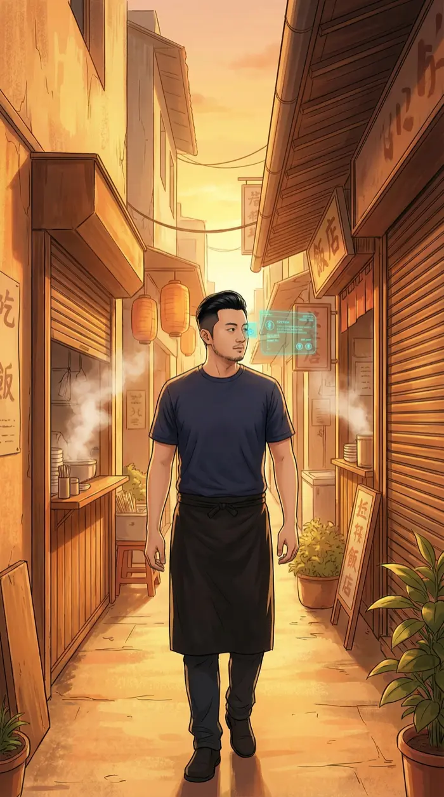
第二天，我五点就到了。不是勤快——是系统在四点半就开始在我脑子里放倒计时提示音。比创业时投资人催demo还准时。
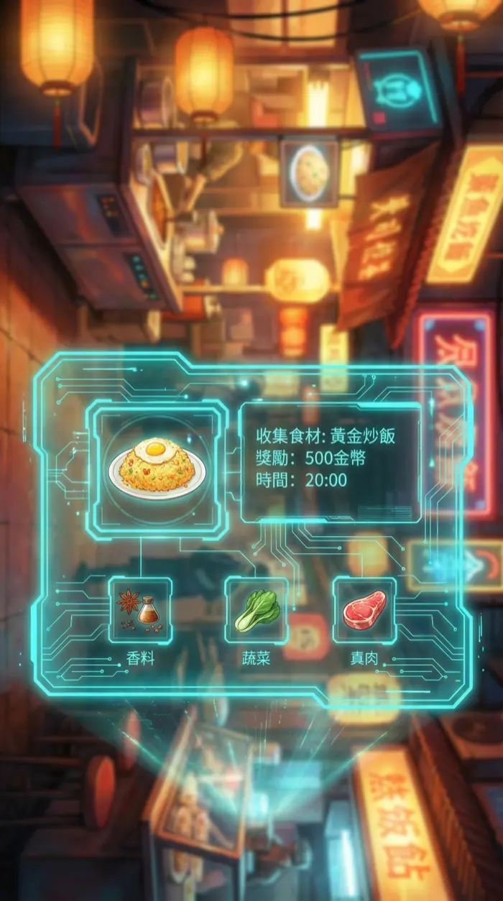
黄金蛋炒饭。听着像大排档标配——但系统把它标记成了B级食谱。我昨天做的面才D级。B级意味着什么？意味着普通人可能练三年才能做好，而系统给我一天。果然跟创业一样，永远是不可能的deadline。
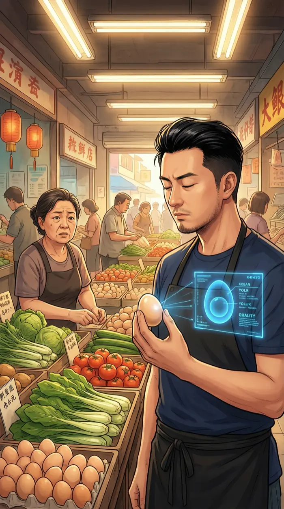
味觉透视的进阶——"食材共鸣"还没解锁，但味觉透视本身升级了。我闭着眼摸了一颗鸡蛋，脑子里立刻出现了这颗蛋的全息信息：散养土鸡蛋，产出48小时内，蛋黄饱满度92%。
隔壁摊位的大姐看我摸鸡蛋闭眼的样子，默默往后退了一步。
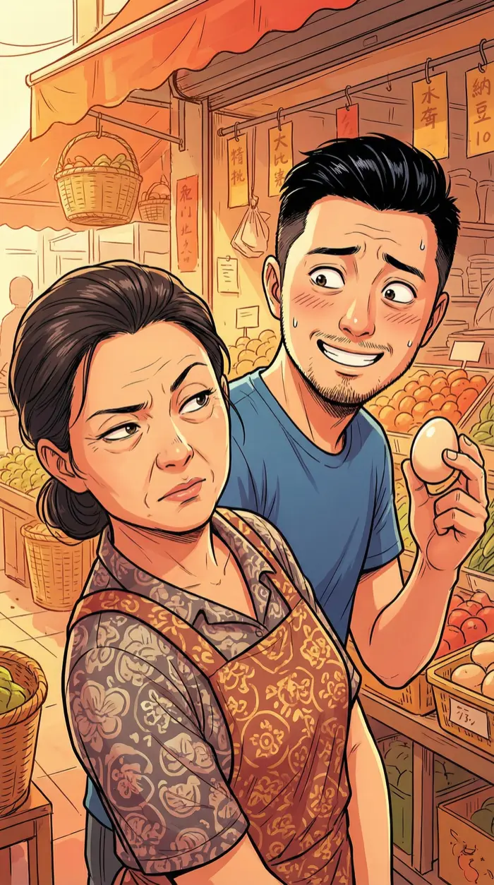
"老板你是在……算命？"
"我在挑蛋。"
"挑蛋闭什么眼？"
"……用心感受。"
"哦。"
她那个"哦"拖了三秒，充满了"这年头什么人都有"的味道。
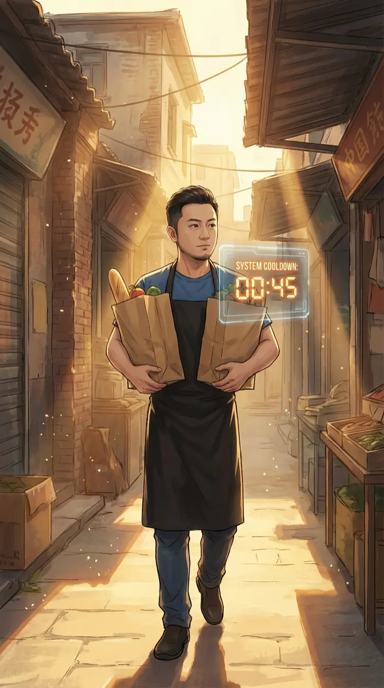
食材到位。系统给的食谱配料表像一份精确到克的化学方程式——米饭含水量12%、鸡蛋3颗、葱花切至2mm厚度、锅温控制在230℃±5℃。这不是做饭，这是做实验。作为一个前程序员，我表示：终于有我擅长的环节了。
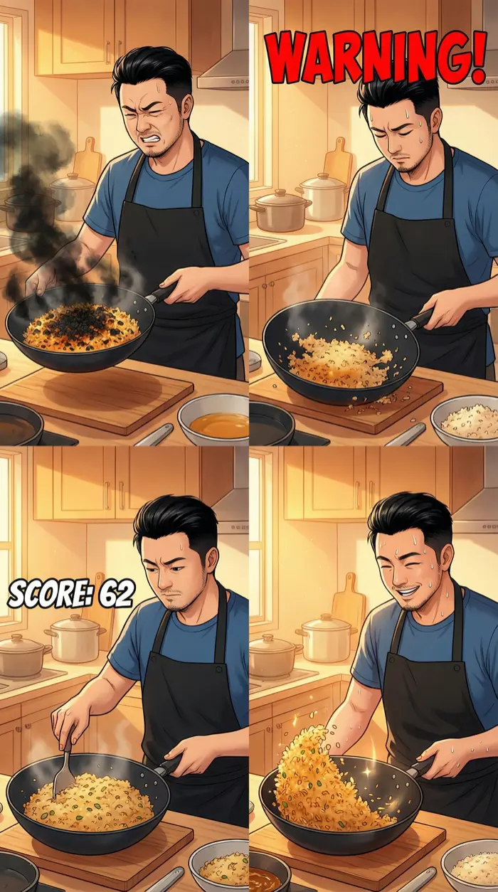
四次。前三次分别创造了"最黑蛋炒饭"、"最粘蛋炒饭"和"最凑合蛋炒饭"。
第四次，当我把温度精确控制在系统要求的230℃，用1.2秒的间隔翻炒——米饭表面出现了一层金色的焦壳。
我做AI的时候从没这么在意一个数字。
"让我尝尝。"
林小鱼没等我同意就夹了一口。嚼了三秒，她停下来了。
"你昨天还不会和面，今天炒出这种饭？"
"天赋吧。"
"……你信吗？"
"不信。但我也解释不了。"
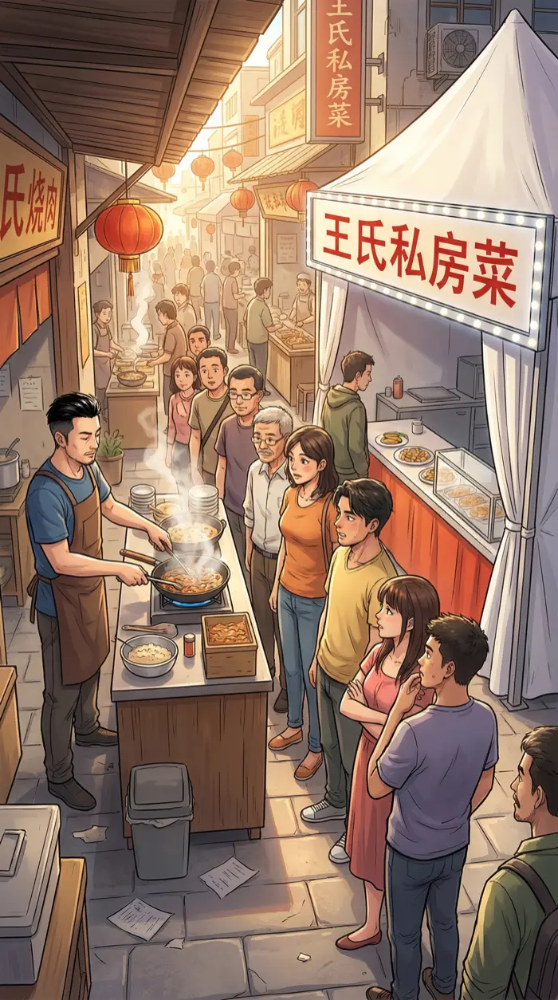
中午了，昨天那碗面的朋友圈效应开始发酵——我摊前排了十多个人。
正得意呢，巷口突然冒出一个崭新的摊位。白帐篷、LED灯、"王氏私房菜"——这装备一看就不是来摆摊的，是来打仗的。
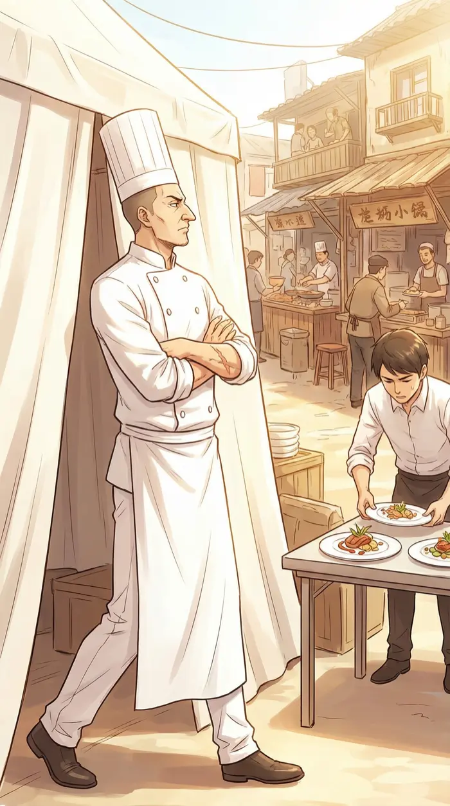
出来一个穿白色厨师服的高个子，帽子戴得比他人还高。他站在帐篷前环视了一圈巷子里的小摊贩，那眼神像是米其林三星在审视路边摊——技术上没错，但让人很不舒服。
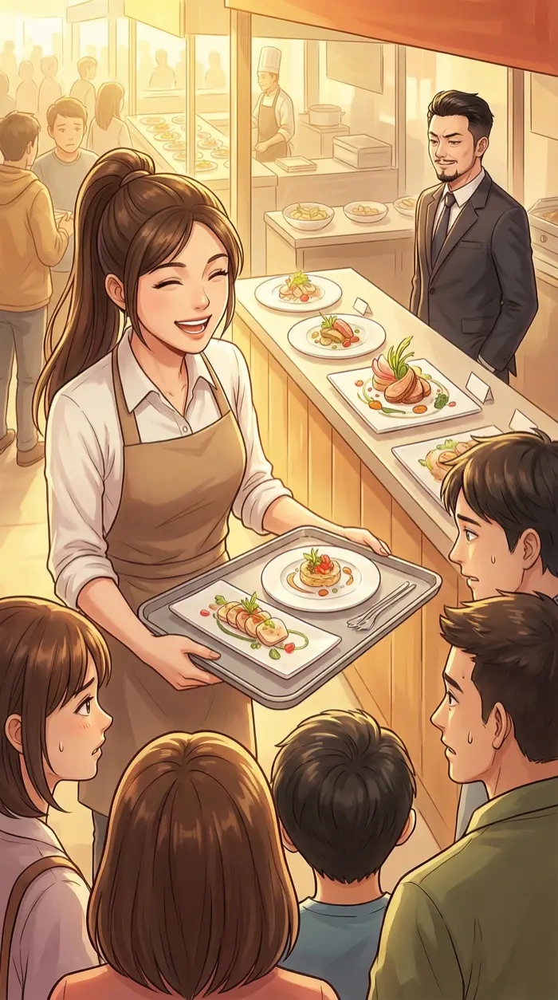
"免费试吃！正宗粤式叉烧、秘制牛腩、蟹黄包——全部免费！"
他手下的助手把一盘盘精致得像艺术品的菜端出来。排在我这儿的队伍，肉眼可见地少了三分之一。
这招我太熟了——创业圈叫"烧钱获客"，餐饮圈叫"免费试吃"。赵总的钱在替他打仗。
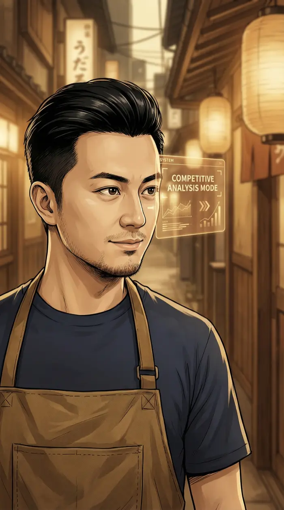
慌吗？说实话，不慌。创业三年，我被抄袭过、被砸价过、被投资人在路演现场当众否定过。一个摆摊的来抢客？这叫什么？这叫"市场竞争来了，说明你做对了"。
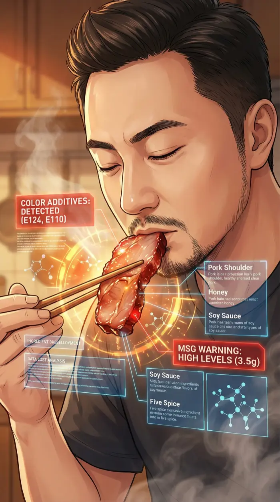
我走过去拿了一块叉烧。王厨挑了挑眉，显然觉得我是来投降的。
我把叉烧放进嘴里——味觉透视启动。三秒后，系统给出了完整分析：蜜汁叉烧，用的是进口叉烧酱，味道的确不错。但——色素超标12%，味精用了正常量的1.8倍。
换句话说：好吃，但不健康。就像某些创业公司，数据好看，但全是刷出来的。
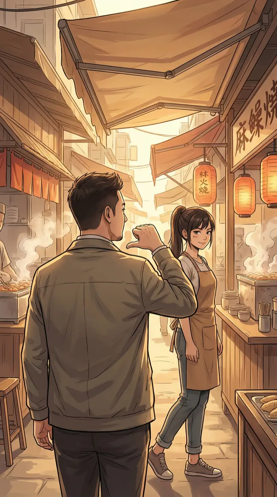
我走回来对小鱼说了一个字：
"虚。"
她秒懂。在这条巷子混了三年，她比我更清楚——花架子不长久。
但眼下的问题是：我得在今天证明这一点。而我手里的武器，只有一份还没做到80分的黄金蛋炒饭。
系统根据刚才对王厨菜品的分析，自动调整了我的蛋炒饭配方——降盐、加葱油、米饭更干。这是AI做的事啊：根据竞品数据优化自己的产品。我笑了。从AI到炒饭，底层逻辑居然是通的。
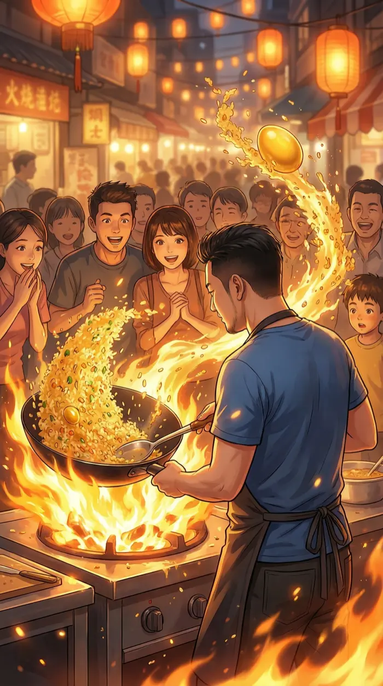
我点火。这次不再是练习——猛火、宽油、蛋液下锅的那一刻嗤的一声，整条巷子都闻到了。
锅温232℃，翻炒间隔1.1秒。系统在我视野里实时显示每一个参数。
这不是做饭，这是一场精确到毫秒的战斗。
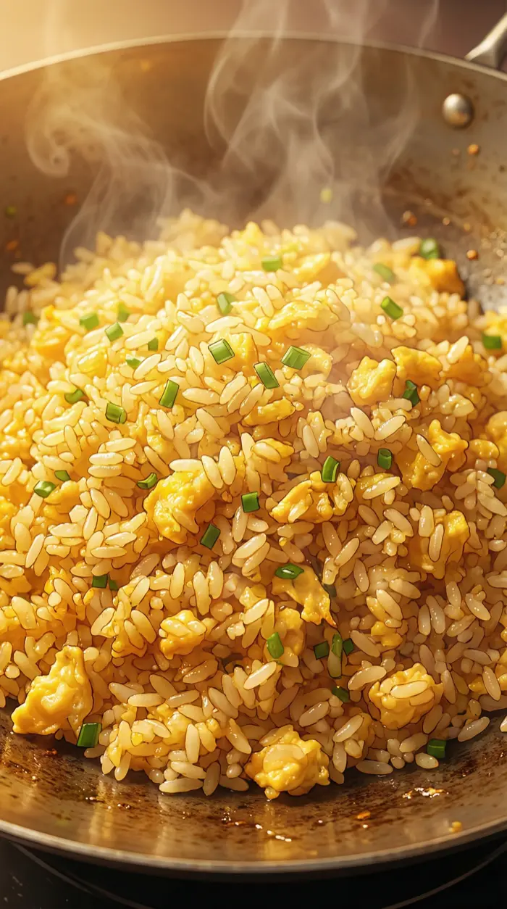
蛋炒饭的灵魂不是蛋也不是饭，是"金"。每一粒米都要裹上一层薄薄的蛋衣，在高温下形成0.2毫米的焦壳。这个焦壳——就是"黄金"。
装盘。白瓷碗倒扣，金色的炒饭像一座小山丘。撒上葱花，旁边放一碗清汤。
这是林小鱼教我的——"卖面不只是卖面，是卖那一眼的感觉。"做AI的时候，产品经理管这叫"用户体验的最后一公里"。在这里叫"仪式感"。
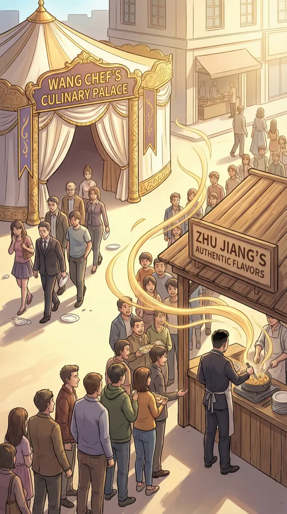
战局在逆转。王厨的免费试吃正在失效——人吃完免费的就走了，因为正餐卖38一份，巷子里的人不会花这个钱。
而我这碗蛋炒饭，15块，香味飘了半条街。免费的打不过好吃的。我做AI时就学到了这一课：免费增长有天花板，产品力增长没有。
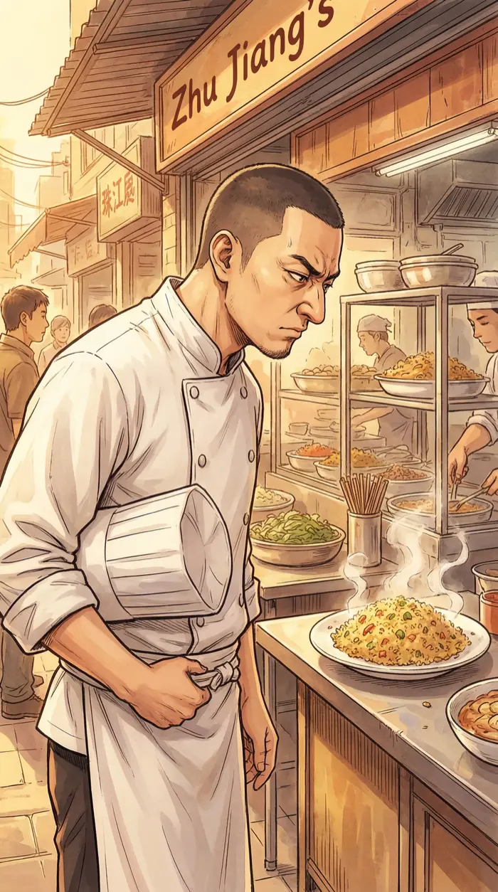
王厨走过来了。他摘下厨师帽——第一次看到他摘帽子。短寸很精神。他看着我锅里的炒饭，沉默了五秒。
做过厨师的人，看一眼就知道水平。
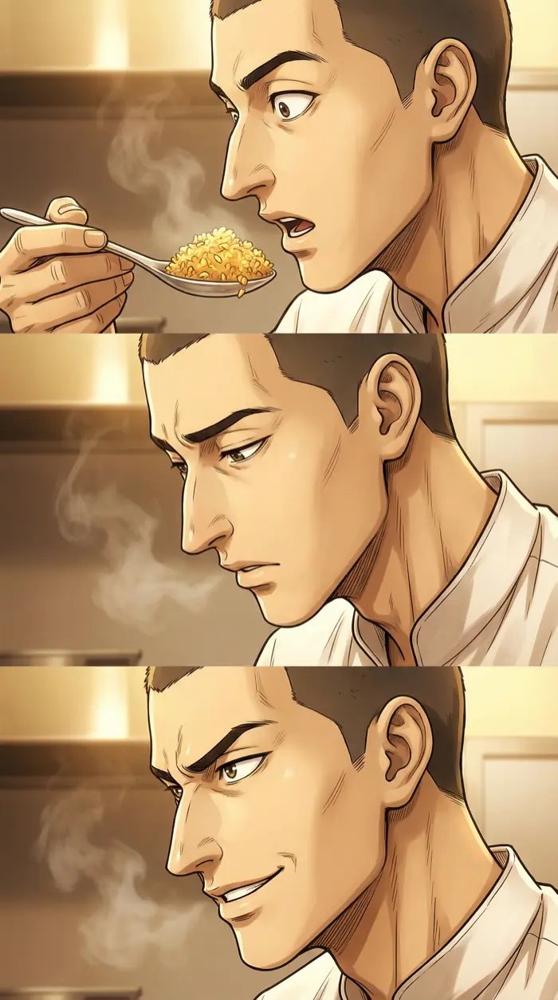
他没说话，拿了一勺就吃。嚼了三下。我看到他的喉结动了一下——吞了。
厨师圈有个不成文的规矩：如果只是礼貌地尝，会嚼两下然后放下。吞下去的意思是——好吃到身体做出了本能反应。
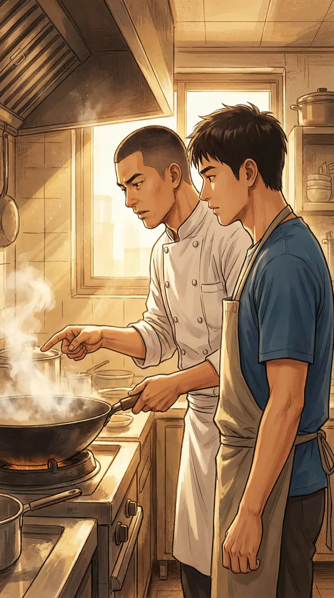
王厨愣了。他大概准备好了十种我回怼的场景，就是没准备好我认真请教。
"收尾三秒，降温到200。焦壳要定型，不是烤糊。"
——免费的技术指导。这一条建议，可能值十次失败。
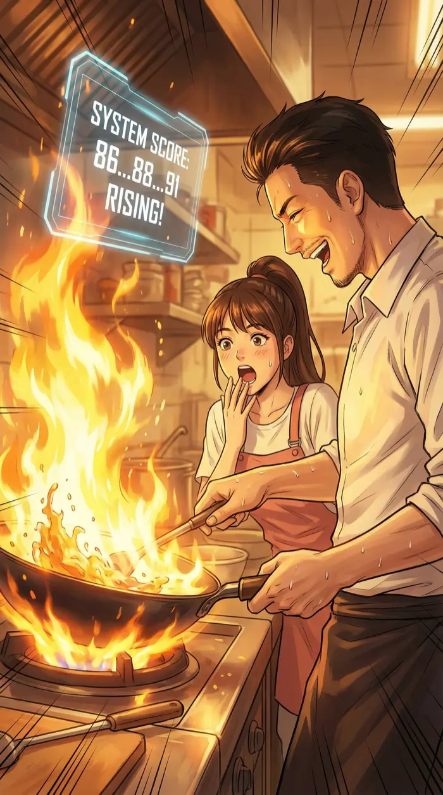
我立刻又起了一锅。这次在最后三秒压低火力——
林小鱼的嘴张成了O型。王厨的表情更有意思——他像是在看一个天赋异禀但没经过训练的毛坯，既欣赏又不爽。
第一个吃到91分蛋炒饭的是一个穿格子衫的大叔。他吃完最后一口，闭上眼睛。我屏住呼吸。他睁开眼：
"完美。"
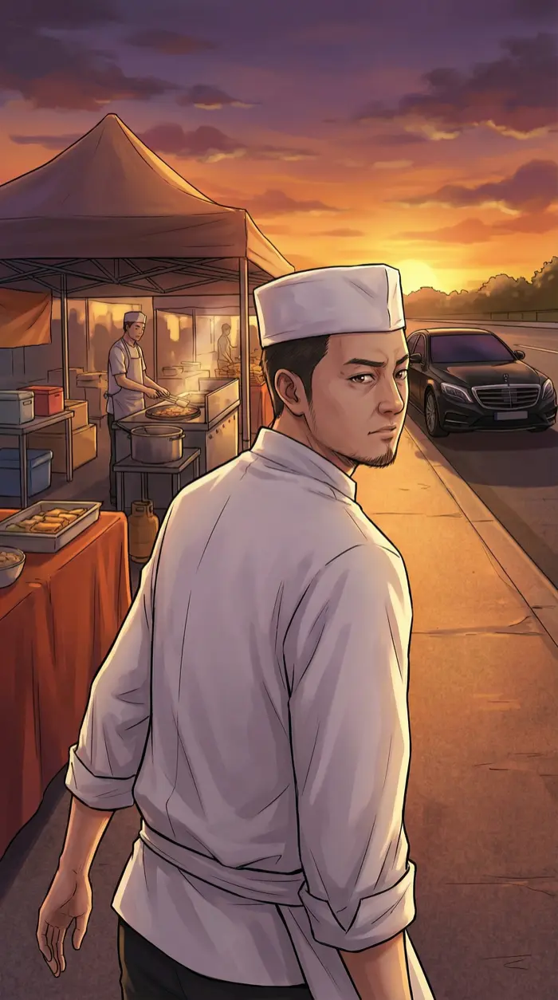
王厨转身走了。走了两步他回头说了一句：
"下个月有个厨艺大赛。你来。"
这不是邀请——是宣战。我看到赵总的黑色奔驰停在巷口，车窗摇下来一条缝。赵总在看着这一切。他的眼神让我想起投资人看竞品的表情——如果不能收编，就准备干掉。
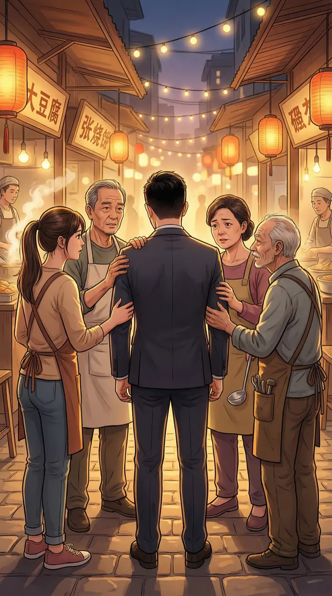
收摊后，隔壁的摊贩都围过来了。卖烧饼的老张、豆腐脑大姐、还有巷口修鞋的李叔——他不卖吃的但每天在这儿看了十年。
"小朱，赵总的人今天来了，你知道意味着什么吧？"
"知道。他想拆这条巷子。"
"不只是拆。他要把我们都赶走，然后建他的连锁美食城。"
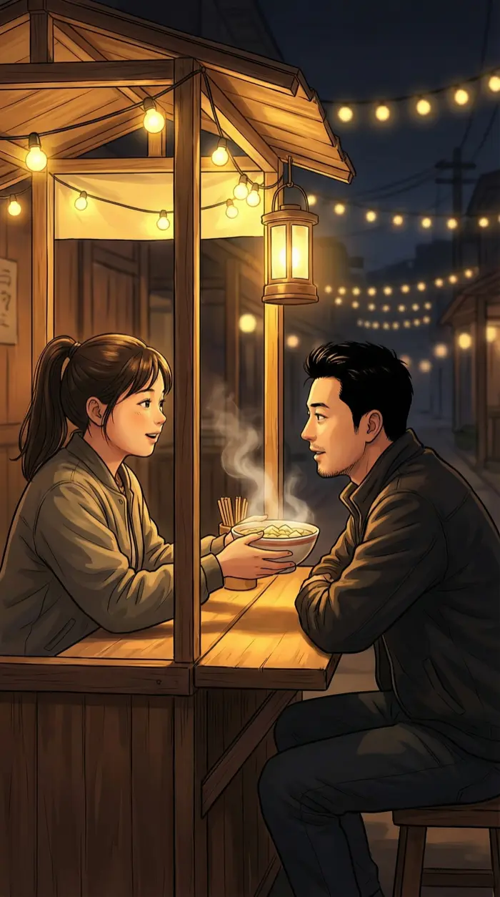
人散了之后，林小鱼给我下了碗馄饨。
"你不怕吗？"
"怕什么？"
"赵总。他上次赶走了两条街的摊贩。"
"那两条街的摊贩里没有我。"
她白了我一眼。
"但我学了三年怎么赢。"
我打开系统看了看技能树。Lv.3，刚走了一小步。从Lv.3到Lv.10，中间是一片灰色的未知。但我也看到了一个亮着金光的节点——
这个技能一旦解锁，我就不再只是"会做几道菜"，而是"能创造菜"。从Copy到Create——和做AI一模一样的进化路径。
我看着手上的伤痕。昨天的烫伤还没好，今天又添了一道切葱时的刀伤。做AI的手现在变成了做菜的手。
我点开手机上厨艺大赛的报名页面——"全市餐饮从业者均可参加。初赛时间：14天后。"14天。从Lv.3到至少Lv.7——这是参赛的最低技术要求。系统算了一下：每天需要完成2.5个烹饪挑战，零失败。
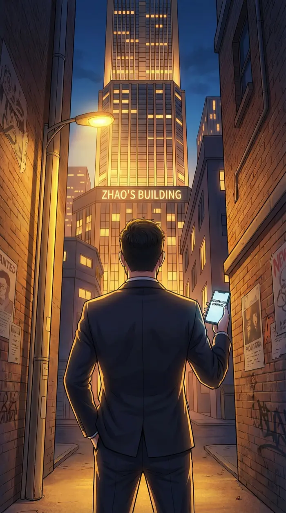
我点了报名。14天后，战场就不再是这条巷子了——而是全市最大的烹饪擂台。
赵总，你的地盘。但规则是一样的——谁做的菜好吃，谁赢。我在AI行业输给了资本，但在厨房里，只有锅和火不会看你账上有多少钱。
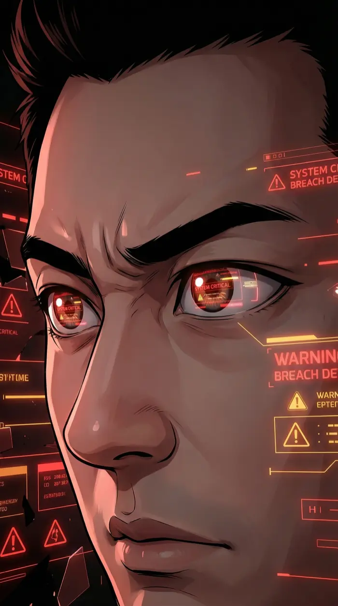
赵总没打算等14天——他直接举报了整条美食街。
72小时，要么我考到食品经营许可证，要么这条街就被封了。
14天的备战计划，变成了72小时的生死时速。而考许可证需要Lv.5——我现在才Lv.3。
这不就是我最熟悉的剧本吗？永远不够的时间，永远卡着deadline的考验。不同的是，这次我输了，不只是我的摊没了——整条街的人都要流落街头。
明天，我得在一天之内升两级。